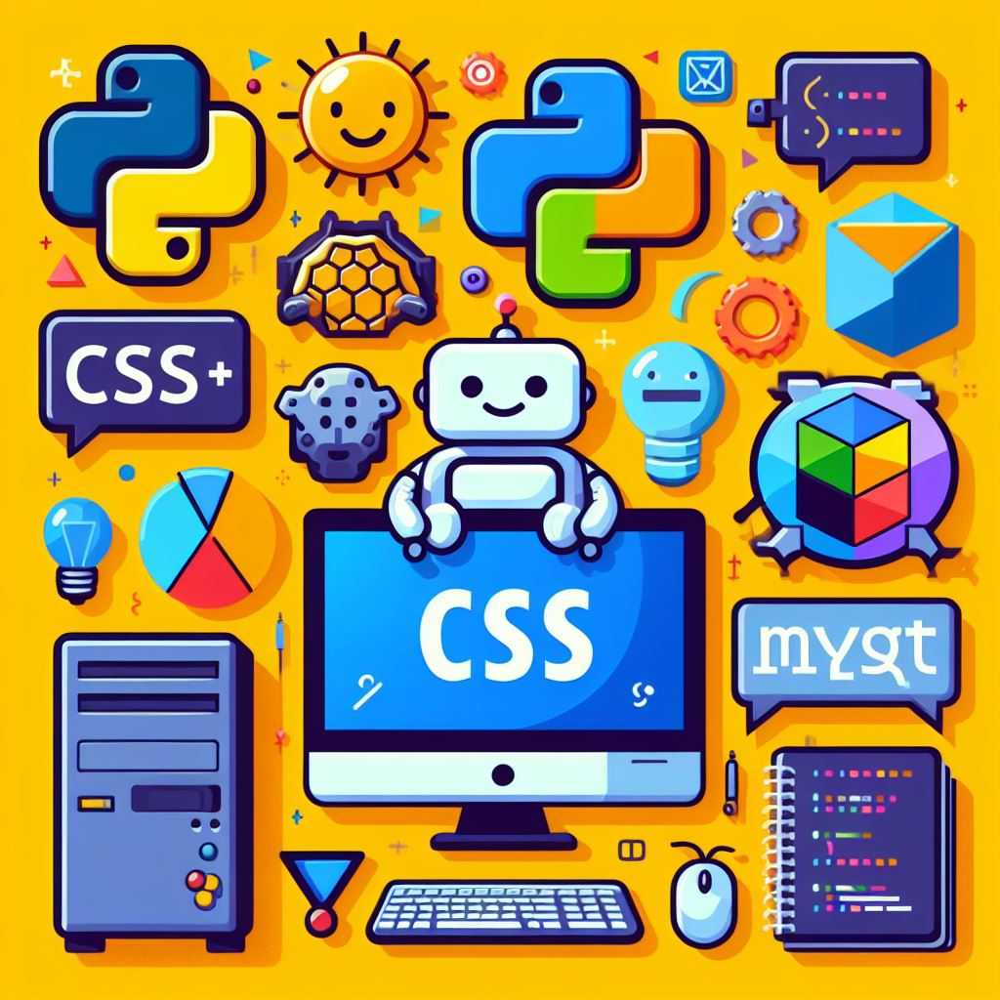

Ailton Rocha Cordeiro
Dados:
Endereço : Rua Vinte e Cinco de Março Cep: 01021-000
E-mail: arc48388528@gmail.com / ailtonrocha0122@icloud.com
Telefone : (11) 98957-5330
Sou um profissional com experiência diversificada em rotinas administrativas e tecnologia da informação. Conto com dois anos de experiência como Analista de Sistemas Help Desk, oferecendo suporte técnico especializado em instalação de softwares, manutenção de computadores e notebooks, e auxiliando os clientes na execução dessas tarefas.
Além disso, acumulei três anos de experiência em rotinas administrativas, incluindo emissão de notas fiscais, atendimento ao cliente, cobrança e recrutamento de colaboradores para a empresa.
Recentemente, concluí meu curso de Engenharia da Computação, proporcionando-me uma base sólida em áreas como Python, Banco de Dados, C, Corel Draw, Illustrator, Photoshop, SQL, Visual Basic e no Pacote Office (Excel, PowerPoint e Word). Embora não tenha experiência prática em programação, tenho um compromisso contínuo com a atualização e o aprimoramento dessas habilidades por meio de estudos independentes.
Além disso, estou em processo de aprendizado da língua inglesa, possuindo um conhecimento básico do idioma.
Estou ansioso para aplicar minha experiência e conhecimento em tecnologia da informação e engenharia da computação em desafios futuros e continuar minha jornada de desenvolvimento profissional
Sobre o Ailton
Olá! Meu nome é Ailton Rocha Cordeiro, e sou natural do Maranhão, mais especificamente da cidade de Barra do Corda - MA. Tenho 25 anos e atualmente resido em São Paulo, SP, junto com meus pais. Além disso, sou abençoado com duas irmãs maravilhosas: Alessandra e Regina.
Profissionalmente, sou graduado em Engenharia da Computação e atuo como analista de sistemas na área de help desk. Desde sempre, tenho uma paixão indescritível por tecnologia. Sou aquele tipo de pessoa que adora desvendar os segredos por trás das telinhas e entender como as coisas funcionam.
Ao longo da minha jornada, adquiri diversos conhecimentos em tecnologia, incluindo habilidades em Python, C#, e Banco de Dados SQL. Atualmente, estou imerso nos estudos de HTML e CSS, explorando os intricados estilos por trás das ferramentas digitais.
Quando não estou imerso em códigos e tecnologia, gosto de passar meu tempo livre de forma ativa. Sou adepto de exercícios físicos, como andar de bicicleta e jogar bola. E como um verdadeiro entusiasta da tecnologia, não posso negar minha paixão pelo mundo virtual e pelos jogos eletrônicos.
Em resumo, sou uma mistura de curiosidade, conhecimento e diversão, sempre em busca de novas experiências e desafios no vasto universo da tecnologia. É um prazer me apresentar a você!
Experiência Profissional:
Analista de Suporte – JR II
Linx - São Paulo, SP
Setembro de 2022 a Data Atual
Sou um analista de sistemas altamente qualificado, com uma paixão por solucionar desafios
tecnológicos e impulsionar o sucesso dos negócios por meio da inovação. Minha experiência
abrange o
desenvolvimento, implementação e suporte de soluções de software, sempre alinhadas às
necessidades
específicas dos clientes e aos objetivos organizacionais. Sou conhecido por minha habilidade em
trabalhar em equipe, liderar projetos complexos e fornecer soluções eficientes que impulsionam a
eficácia e a eficiência dos processos.
• Auxiliar na análise de requisitos e no desenvolvimento de módulos de sistemas.
• Análise de requisitos e especificações de sistemas.
• Modelagem de dados e design de banco de dados.
• Resolução de problemas e depuração de software.
• Liderança de projetos e trabalho em equipe.
• Comunicação clara e eficaz com usuários e equipe técnica.
• Análise e descrição de cada atendimento prestado.
• Realização de acesso em máquinas de clientes, por meio de softwares para análise e solução
do problema ali presente!
• Abertura de protocolos, acompanhamento do SLA, e fechamentos de protocolos com
detalhes sobre o atendimento desde a análise inicial aos passos prestados para a solução do
mesmo.
• Realizar instalações e atualização de softwares e drivers de periféricos.
• Realizar reuniões com líderes e fazer apresentações de relatórios sobre demandas semanais.
Gerente de Loja
CITY DISTRIBUIDORA - São Paulo, SP
Setembro de 2020 a setembro de 2022
• Liderar e supervisionar a equipe, garantindo um alto padrão de atendimento ao cliente e
um ambiente acolhedor.
• Desenvolver e implementar estratégias para aumentar as vendas de bebidas e alcançar as
metas lançadas pela empresa.
• Gerenciar o estoque de bebidas, controlar os custos e garantir a qualidade dos produtos
oferecidos.
• Treinar e capacitar a equipe, para o atendimento ao cliente e práticas de segurança
alimentar.
• Colaborar com a equipe de marketing para criar promoções e eventos especiais para atrair
novos clientes e fidelizar os existentes.
Suporte Técnico
New Center Informática - Barra do Corda, MA
Janeiro de 2015 a dezembro de 2017
• Prestar suporte técnico presencial e remoto para clientes, identificando e resolvendo
problemas em hardware, software e redes.
• Configurar e instalar sistemas operacionais, aplicativos e periféricos, garantindo o correto
funcionamento dos equipamentos.
• Realizar diagnósticos precisos, seguindo procedimentos e realizando a aberturas de
protocolo documentando as etapas de análise inicial a identificação do problema até a
solução de problemas e encerramento do protocolo.
• Treinar usuários em novas tecnologias e funcionalidades, proporcionando um uso mais
eficiente dos recursos disponíveis.
• Manter registros detalhados das interações com os clientes e acompanhar os tickets de
suporte até a resolução completa.
Habilidade adquiridas:
• Liderança e habilidades de gerenciamento. (3 anos)
• Capacidade de resolver problemas e tomar decisões. (4 anos)
• Gestão do tempo e organização. (3 anos)
• Inteligência emocional e empatia. (4 anos)
Formação Acadêmica
Engenharia da Computação, duração 5 anos (2018 a 2023)
Concluído
Python, duração 3 meses (Atualmente estudando )
MySQL - SQLServer , duração 2 meses (2020)
C++, duração 40 horas (2022)
Linux, duração 40 horas (2022)
Introdução IOT – Cisco, duração 40 horas (2022)
Introdução à desenvolvimento de software moderno – DIO duração 40 horas (2023)
HTML e CSS, duração 40 horas (2023)
Montagem e manutenção de computadores, duração 2 anos (2015 a 2017)
Curso de redes – Cisco, duração 40 horas (2020)
Inglês, duração 1 ano - (2022) Nível Básico